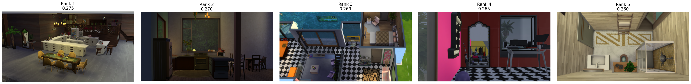
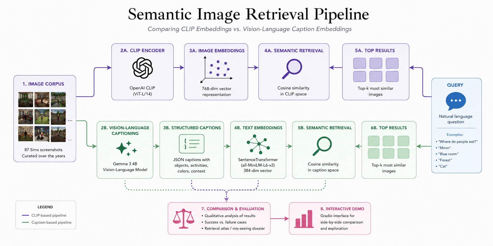

Abstract
This project investigates whether Vision-Language Models can improve semantic image retrieval compared to direct CLIP embeddings. Using a curated archive of 87 Sims screenshots, images were captioned with Gemma 3 and transformed into structured semantic descriptions. Caption embeddings were compared against traditional CLIP image embeddings through natural-language retrieval tasks. The project evaluates both approaches using qualitative retrieval examples, failure cases and an interactive Gradio interface.
Corpus Statement
The Sims 4 - Gameplay Collection
87 images
This specific collection was intentionally selected to challenge a joint text-image embedding model's capacity to distinguish subtle compositional changes, weather types and landscapes, human or animal figures, color dominations without relying on explicit metadata tags or generated descriptive captions. Each image is a 3D render of own creations.
The 87 individual assets were systematically compiled, deduplicated, and unified into standardized high-resolution formats. The visual distribution was strictly audited to maintain balanced variation across colors, lighting, and structural configurations, tricky similarities (i.e. moon vs. white circle objects, animals vs. curved nude tone objects) providing a rigorous environment for testing retrieval boundaries.
System Architecture & Approach
87 curated Sims 4 screenshots processed and unified into standard high-res assets.
Images run through OpenAI CLIP visual encoder once; normalized tensors cached to Drive.
Gemma 3 generates rich vision captions for all images; text models index the descriptions.
Natural language queries map concurrently through CLIP vs. VLM descriptive spaces to contrast similarities.
Interactive side-by-side layout interface to observe retrieval failure modes and successes.
Vector store queries prompt an LLM to reason over retrieved contextual image indices for conversational QA.
Retrieval Atlas (Diagnostic Evaluations)

CLIP map translates semantic concept rules straight into flat spatial compositions containing dominant structural lines.
The system experiences structural failure during absolute spatial counting queries, prioritizing the "red" token over constraints.
